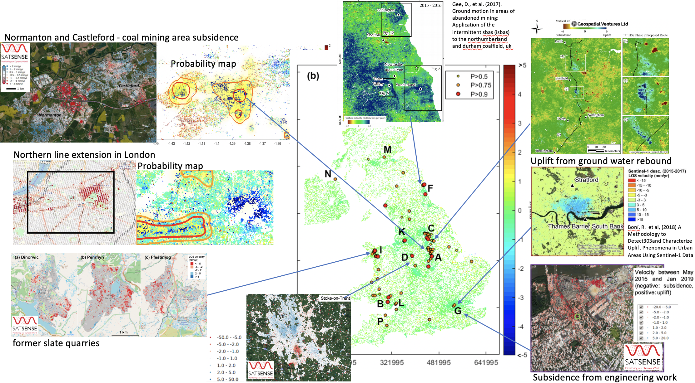

Dynamic Ground Motion Map of the UK
Krisztina Kelevitz
Zahra Sadeghi
Tim Wright
COMET, University of Leeds


Aim
To explore the ways in which the existing sensor network, defined as Sentinel-1 radar data combined with UK-expertise in InSAR processing and analysis, could be used to address the environmental challenges posed by ground motion due to range of sources. The project explores how dynamic ground motion maps could be integrated into a Digital Environment through combination with other digital infrastructure and the use of environment-focussed informatics for data handling, feature extraction, data fusion, and decision making.

Detecting Ground Deformations in the Built Environment
The large volumes of Sentinel-1 data produced over Europe are being used to develop pan-national ground motion services. However, simple analysis techniques like thresholding cannot detect and classify complex deformation signals reliably making providing usable information to a broad range of non- expert stakeholders a challenge. Here we explore the applicability of deep learning approaches by adapting a pre-trained convolu- tional neural network (CNN) to detect deformation in a national- scale velocity field. For our proof-of-concept, we focus on the UK where previously identified deformation is associated with coal- mining, ground water withdrawal, landslides and tunnelling. The sparsity of measurement points and the presence of spike noise make this a challenging application for deep learning networks, which involve calculations of the spatial convolution between im- ages. Moreover, insufficient ground truth data exists to construct a balanced training data set, and the deformation signals are slower and more localised than in previous applications. We propose three enhancement methods to tackle these problems: i) spatial interpolation with modified matrix completion, ii) a synthetic training dataset based on the characteristics of the real UK velocity map, and iii) enhanced over-wrapping techniques. Using velocity maps spanning 2015-2019, our framework detects several areas of coal mining subsidence, uplift due to dewatering, slate quarries, landslides and tunnel engineering works. The results demonstrate the potential applicability of the proposed framework to the development of automated ground motion analysis systems.
Talk
Downloads
- Paper [PDF] [EarthArXiv]
Citation
@ARTICLE{9181454,
author={N. {Anantrasirichai} and J. {Biggs} and K. {Kelevitz} and Z. {Sadeghi} and T. {Wright} and J. {Thompson} and A. M. {Achim} and D. {Bull}},
journal={IEEE Transactions on Geoscience and Remote Sensing},
title={Detecting Ground Deformation in the Built Environment Using Sparse Satellite InSAR Data With a Convolutional Neural Network},
year={2020},
volume={},
number={},
pages={1-11},
doi={10.1109/TGRS.2020.3018315}}